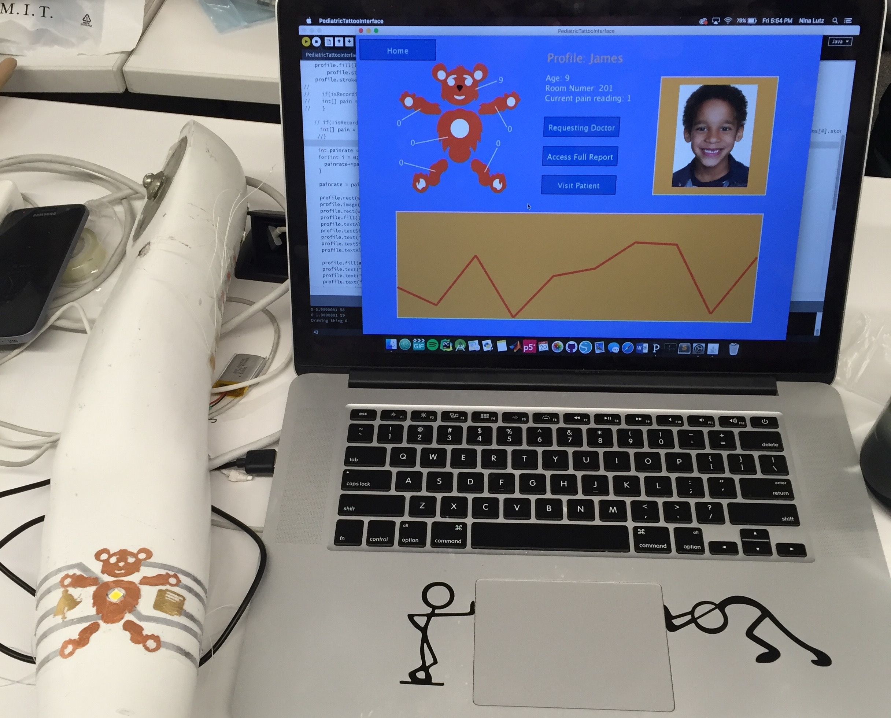
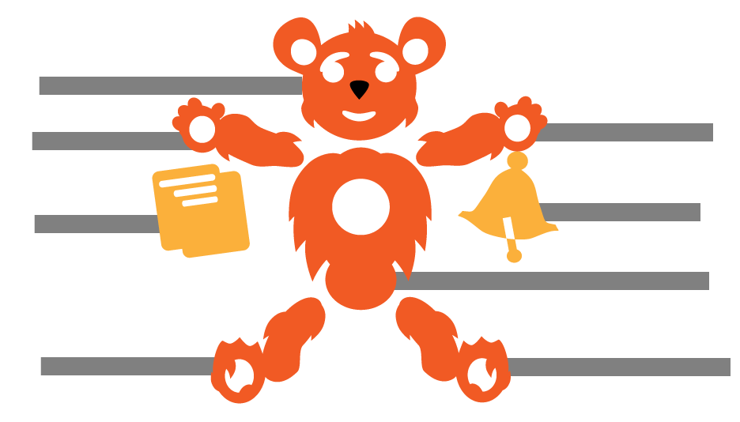
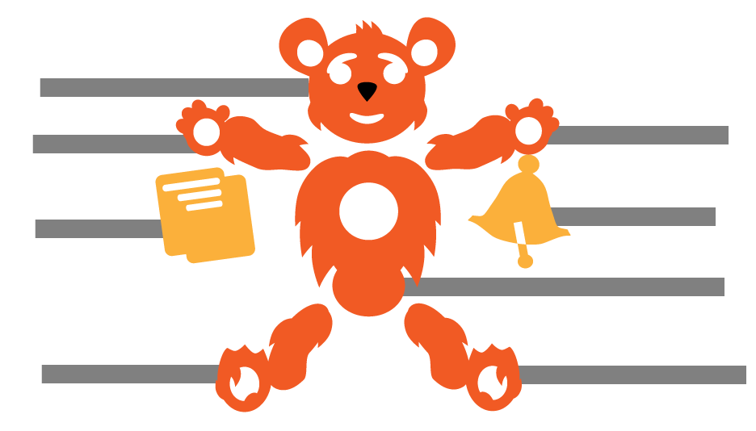

This was done in a workshop run by Cindy Kao in the MIT Media Lab. We wanted to created a fun temporary tattoo for children in pediatric wards to communicate and log their pain readings with their medical providers. Our system involves an electronic tattoo, GUI, and web server.
We designed a bear tattoo, with two buttons. The user can press down on the part of the bear where they are in pain; the longer they press the higher the pain reading. They can press a bell button to call the doctor and the report button to start a new pain reading. An LED confirms when these buttons are pressed or when a doctor is going to come visit them.
The circuit is a capacitive sensor wired to the micro controller Cindy’s lab made. This logic was communicated via bluetooth where the pain readings were stored in a web server.
I was personally responsible for the concept design, capacitive sensing logic and calibration, communication with the software and web server, and design of the GUI.
 

Bear designed by Josh Woodward.